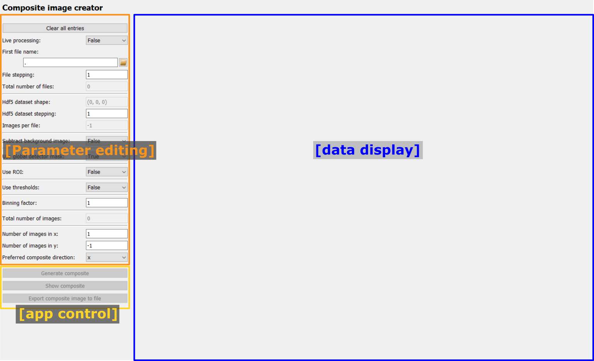
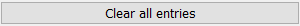
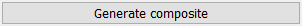
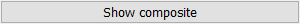
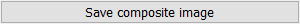

Composite image creator frame
The Composite image creator frame is a graphical interface to configure the
CompositeCreatorApp and to
visualize the results.
After starting the frame, only the menu for editing the Parameters is enabled (orange frame in the image below). For the tutorial about editing Parameters, please visit Editing Parameters in the GUI. The full list of Parameters and their description is given at the end in Full list of Composite image creator Parameters.
After setting the required Parameters, the app control panel (yellow frame in the image below) will become enabled and the user can start processing.
The processed composite image will be shown on the right side of the frame (blue area in the image below).
{kind=link}
Control buttons
Clear all entries
The “Clear all entries” button at the top will reset all inputs to their default values. Note that no confirmation will be asked of the user.
Generate composite
Once the bare minimum Parameters have been selected (this is the first file name
and in case of an Hdf5 file the dataset), the “Generate composite” button will
be enabled. Clicking the button starts an AppRunner
process which loads and processes the images in parallel processes.
Once clicked, the “Generate composite” button will be disabled and a progress bar as well as an “Abort” button will appear:

The progress bar will update with each received image and it shows the global processing progress. The “Abort” button will stop the AppRunner. Any data received by the Frame up to this point will be kept but the rest of the composite image will only consist of zeros. The progress bar and “Abort” button will be hidden again after the Composite creation has finished.
Note
After starting the AppRunner, it is normal that the first results need a few seconds to arrive because the new processes need to be started and load all required python packages.
Show composite
During processing, the composite image is automatically updated. If the uses requires an additional manual update, the “Show composite” button can be used to perform this update.
Save composite image
The “Save composite image” button opens a dialogue to select a file name. The image type is determined automatically based on the selected file extension. A filter for all supported data types can be selected at the bottom of the dialogue.
Result visualization

Results are visualized in a PydidasPlot2d,
described below:
Pydidas 2D plot
The PydidasPlot2d is a
subclassed silx Plot2d
with additional features useful in pydidas.

- The menu
The menu bar allows access to all generic silx and additional pydidas functionality. The detailed menu icons and actions are described below in the menu entries description.
- The image display
This widget shows the image data. Depending on the zoom level, this is either the full image or a sub-region.
- The colorbar
The colorbar shows the reference for the used colormap to map data levels to colors.
- The position information
This widget displays the coordinates and data values of the data under the mouse cursor.
Two-dimensional plots are presented in a silx Plot2D widget. The toolbar options will be explained in detail below. Moving the mouse over the canvas will update the labels for x/y position and data value at the bottom of the canvas. Note that the x and y axis positions for each pixel are defined at the pixel center and the given values must be treated carefully with respect to the pixel shape, especially for coarse pixels.
Tip
The scaling of the results can be achieved by modifying the colormap settings.
menu entries description
menu icon |
description |
|---|---|

|
Zoom mode: clicking with the mouse and dragging spans a new selection of the data to be visualized. |

|
Panning mode: clicking with the mouse and dragging moves the data on the canvas. |

|
Unzoom: Reset the display region to the full data. |

|
Match canvas: Set the aspect ratio to 1 and match the canvas size to the data to allow a tight fit. |

|
Expand canvas: Reset the canvas size to take up all available space. This option does also change the data aspect to make use of the full canvas. |

|
Open the colormap editor. This button opens a window with selections for the colormap and scaling of the displayed minimum and maximum values. |

|
Crop histogram outliers: Calculate the histogram of the image and set the colormap to ignore the low x% and the top *y% of the image histogram. The levels of x and y can be adjusted in the pydidas user settings. |

|
Autoscale the colormap to the image mean value +/- 3 standard deviations. |

|
This action allows to control the aspect of the displayed data and allows to stretch the data to fill the available canvas or keep its original aspect ratio. |

|
Control the position of the origin in the image: Select between the top left and bottom left corner. |

|
Display or hide the colorbar on the drawing canvas. |

|
Mask tools: This button opens an additional widget at the bottom of the canvas with tools for importing or setting a mask to mask certain data regions. |

|
Set coordinate system: This button will open a submenu which allows to
select the coordinate system (cartesian or cylindrical). Note that the
cylindrical coordinate system use the global |

|
Get information for selected datapoint: This button will allow the user to click on a point in the image and show a window with additional information about this point (specifically: all indices / data values). |

|
Copy the currently visible figure to the clipboard. This will only copy the main figure and not the colorbar. |

|
Save the currently loaded full data to file, ignoring any zooming. This function will open a dialogue to select the file type and filename. Depending on the selected file type, the colormap and scaling will be retained (e.g. for png export) or ignored (e.g. tiff export). |

|
Print the currently visible figure. This will print only the data visible on the canvas and it will retain colormap and scaling settings. |

|
Create and delete line profiles. This function allows the selection and editing of line profiles. The line profiles are shown in the histograms plots for the vertical and horizontal, respectively. |